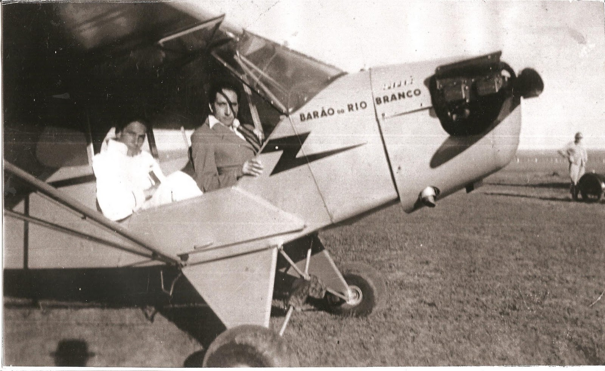

Aulas Práticas

Manoel Soares Leães fazendo aulas práticas
As aulas práticas de vôo eram feitas no Aéroporto Santos Dumont, na cidade de Uruguaiana-RS.
que cedeu para que o curso fosse realizado, Maneco aprende a pilotar com seu instrutor o sargento
Eulasio Vieira Camargo, que o preparou de forma excepcional num mono motor de dois lugares, emprestado
pelo Aéroclube do Rio Grande do Sul.